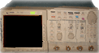
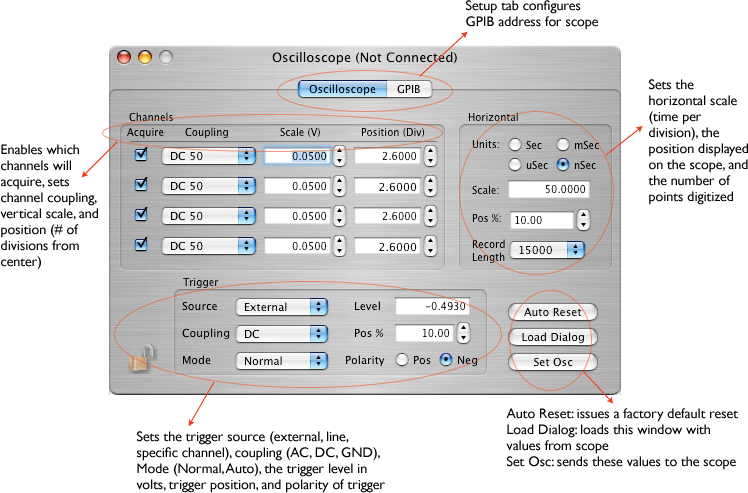

The configuration icon for the Scope is: 
The Tektronix 740A, 754A, and 754D Oscilloscopes are currently supported by ORCA for programming and readout.

The scopes can put out three types of data records. A fixed length time record, a fixed length gtid record, and a variable data record. The formats are as follows:
version 2 (new format)
xxxx xxxx xxxx xxxx xxxx xxxx xxxx xxxx ^^^^ ^^^^ ^^^^ ^^-----------------------Data ID -----------------^^ ^^^^ ^^^^ ^^^^ ^^^^-n longs + 2version 1 (old format)
scope data record - variable length: xxxx xxxx xxxx xxxx xxxx xxxx xxxx xxxx ^^^^ ^----------------------------------ORTek754Model ID ------^^^ ^-----------------------------scope gpib address -----------^^^ ^------------------------scope channel --------------------^^^^ ^^^^ ^^^^ ^^^^-n bytes + 4 n bytes of scope data follow immediately.The scope will use the short form whenever possible.
version 2 (new format) short form
xxxx xxxx xxxx xxxx xxxx xxxx xxxx xxxx ^^^^-^^---------------------------------Scope Gtid ID --------------------^^^^ ^^^^ ^^^^ ^^^^-global trigger idversion 2 (new format) long form
xxxx xxxx xxxx xxxx xxxx xxxx xxxx xxxx ^^^^ ^^^^ ^^^^ ^^-----------------------Scope Gtid ID -----------------^^ ^^^^ ^^^^ ^^^^ ^^^^-length (always 2 longs) xxxx xxxx xxxx xxxx xxxx xxxx xxxx xxxx --------------------^^^^ ^^^^ ^^^^ ^^^^-global trigger idversion 1 (old format)
scope gtid record - 1 32-bit word: xxxx xxxx xxxx xxxx xxxx xxxx xxxx xxxx ^^^^-^----------------------------------ORTek754Model ID + 1 --------------------^^^^ ^^^^ ^^^^ ^^^^-global trigger idversion 2 (new format)
version 1 (old format, no longer used)
xxxx xxxx xxxx xxxx xxxx xxxx xxxx xxxx ^^^^ ^----------------------------------ORTek754Model ID + 2 ------^^^-------------------------------channel ----------^^^^ ^^^^ ^^^^ ^^^^ ^^^^ ^^^^-first part of time xxxx xxxx xxxx xxxx xxxx xxxx xxxx xxxx ^^^^ ^^^^ ^^^^ ^^^^ ^^^^ ^^^^ ^^^^ ^^^^-rest of time recordThe tricky thing here is that the scope gtid and time records are optional. If they are put in the data stream they will immediately preceed the scope date record.